UNIDAD DIDÁCTICA 2:
DISEÑO DEL MODELO CONCEPTUAL
FICHA TÉCNICA DE LA UNIDAD DIDÁCTICA ¶
| Parámetro | Detalle |
| Unidad Didáctica | Unidad 2: Interpretación y diseño de diagramas Entidad/Relación |
| Resultados de Aprendizaje | RA2: Diseña modelos lógicos normalizados interpretando diagramas entidad/relación. |
| Criterios de Evaluación |
CE2.a: Se ha identificado el significado de la simbología propia de los diagramas entidad/relación. CE2.b: Se han identificado las tablas que componen el diseño lógico. CE2.c: Se han identificado los campos que forman parte de las tablas. CE2.d: Se han identificado las relaciones entre las tablas del diseño lógico. CE2.e: Se han identificado los campos clave. CE2.f: Se han aplicado reglas de integridad. CE2.g: Se han identificado reglas de normalización. CE2.h: Se han identificado y documentado las reglas de negocio que no se pueden plasmar en el diseño lógico. |
| Duración Estimada | 25 horas |
ÍNDICE ¶
1. INTRODUCCIÓN Y CLASIFICACIÓN DE LOS MODELOS DE DATOS
2. MODELO ENTIDAD-RELACIÓN (E/R): COMPONENTES CONCEPTUALES
2.2. Atributos y su Clasificación
2.3. Relaciones (Interrelaciones)
3. RELACIONES TERNARIAS Y DE GRADO SUPERIOR
4. MODELO ENTIDAD-RELACIÓN EXTENDIDO (E/RE)
4.1. Generalización y Especialización
4.2. Restricciones de Cobertura en Jerarquías
5. Exclusividad o inclusividad entre relaciones
6. NOTACIONES DEL DIAGRAMA E/R
6.2. Estilo Patas de Gallo (Crow's Foot / Notación de Martin)
6.5. Tabla Resumen de Equivalencias Gráficas
7 Construcción de un diagrama E/R
1. INTRODUCCIÓN Y CLASIFICACIÓN DE LOS MODELOS DE DATOS ¶
Una base de datos representa la información contenida en algún dominio del mundo real. El diseño de base de datos consiste en extraer todos los datos relevantes de un problema, por ejemplo, saber qué datos están implicados en el proceso de facturación de una empresa que vende vehículos agrícolas, o, qué datos son necesarios para llevar el control veterinario de los animales de un zoológico.
Para extraer estos datos, se debe realizar un análisis en profundidad del dominio del problema, y saber, de esta forma, qué datos son esenciales para la base de datos y descartar los qué no son de utilidad. Una vez extraídos los datos esenciales comienza el proceso de modelización, esto es, construir, mediante una herramienta de diseño de base de datos, un esquema que exprese con total exactitud todos los datos que el problema requiere almacenar.
Típicamente, los informáticos analizan un problema a través de diversas reuniones con los futuros usuarios del sistema. Nótese, que generalmente, el problema no solo se resuelve poniendo una base de datos a disposición de un usuario, sino también un conjunto de aplicaciones de software que automaticen el acceso a los datos y su gestión.
Un Sistema Gestor de Bases de Datos (SGBD) se fundamenta en un modelo de datos específico. Definimos un Modelo de Datos como una colección de herramientas conceptuales, reglas sintácticas y convenciones que se utilizan para describir los datos, las relaciones existentes entre ellos, su semántica, sus dominios de valores y las restricciones de integridad y consistencia que deben cumplir.
El modelado nos permite abstraer la complejidad del mundo real en representaciones lógicas comprensibles por los ordenadores y los diseñadores.
1.1. Clasificación de los Modelos de Datos ¶
Para satisfacer estas necesidades, se suele recurrir a tres modelados:
1. El modelo conceptual. Es un modelo que tiene un gran poder expresivo para poder comunicarse con un usuario que no es experto en informática. Tiene una gran potencia para representar el dominio del problema tal y como el usuario lo concibe. El modelo que se usará en este libro será el modelo Entidad/Relación.
2. El modelo lógico. Este modelo es más técnico que el anterior. Los conceptos expresados por este modelo, suelen ser difíciles de entender por los usuarios y generalmente tienen traducción directa al modelo físico que entiende el SGBD.
El modelo lógico elegido dependerá de la implementación de la base de datos, así, no es lo mismo modelizar una base de datos orientada a objetos, que modelizar una base de datos relacional. El modelo que se usará en este libro será el Modelo Relacional.
3. El modelo físico. Es el resultado de aplicar el modelo lógico a un SGBD concreto. Generalmente está expresado en un lenguaje de programación de BBDD tipo SQL. Este libro transformará el Modelo Relacional en modelo físico a través del sublenguaje DDL de SQL.
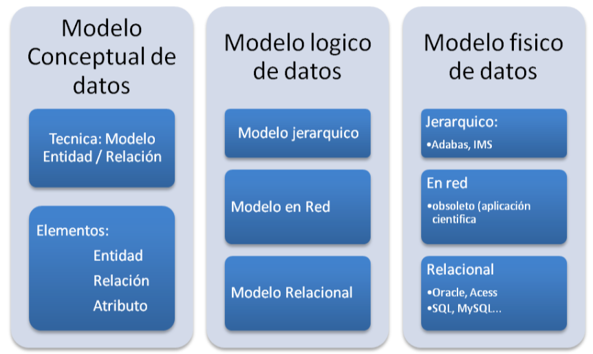
A. Modelos Lógicos Basados en Objetos ¶
Se emplean para describir los datos en los niveles conceptual y externo. Permiten representar la realidad de forma muy cercana a cómo la captamos en el mundo real, ofreciendo una gran flexibilidad para especificar restricciones de integridad.
-
Modelo Entidad-Relación (E/R): Es el estándar de facto para el diseño conceptual de bases de datos. Concibe la realidad como un conjunto de objetos etiquetados (entidades) interconectados entre sí (relaciones), ambos caracterizados por propiedades (atributos).
-
Modelo Orientado a Objetos: Integra las capacidades de las bases de datos con los paradigmas de la programación orientada a objetos (clases, herencia, encapsulación y métodos).
B. Modelos Lógicos Basados en Registros ¶
Se utilizan para especificar la estructura lógica global de la base de datos. A diferencia de los basados en objetos, organizan los registros en estructuras fijas de datos de tamaño homogéneo.
-
Modelo Relacional: Organiza los datos en colecciones de tablas bidimensionales (relaciones) compuestas por filas (tuplas) y columnas (atributos). Es la base del software SGBD moderno (MySQL, PostgreSQL, MariaDB, Oracle).
-
Modelo de Red: Los datos se representan mediante colecciones de registros y las relaciones se modelan como enlaces (punteros). Permite estructuras de grafos dirigidos donde un registro "hijo" puede tener múltiples "padres".
-
Modelo Jerárquico: Similar al modelo de red, pero restringido a estructuras de árboles estrictos. Un nodo o registro "hijo" solo puede tener un único nodo "padre".
C. Modelos de Datos Físicos ¶
Describen cómo se guardan físicamente los datos en los soportes de almacenamiento (discos, bloques, sectores) y las estructuras de acceso físico como índices primarios, secundarios o agrupamientos (clustering).
2. MODELO ENTIDAD-RELACIÓN (E/R): COMPONENTES CONCEPTUALES ¶
El diseño conceptual es la fase inicial del desarrollo de bases de datos, cuyo entregable principal es el diagrama Entidad/Relación (E/R). A continuación, detallamos la semántica y simbología formal de cada uno de sus elementos bajo la Notación clásica de Chen.
2.1. Entidades: Fuertes y Débiles ¶
Una entidad representa un objeto, persona, concepto o evento del mundo real que es distinguible de otros y sobre el cual se desea almacenar información en la base de datos.
-
Ocurrencia de Entidad: Es la instancia o caso concreto de una entidad (ej. el empleado con DNI 12345678A es una ocurrencia de la entidad EMPLEADO).
-
Entidad: Es la definición genérica de la estructura y características comunes de dichas ocurrencias (ej. la entidad EMPLEADO).
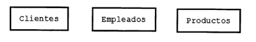
Clasificación según su autonomía de existencia: ¶
-
Entidades Fuertes (Regulares): Tienen existencia por sí mismas en el dominio del problema. Poseen atributos identificadores propios (claves primarias) que garantizan la distinción unívoca de cada ocurrencia. Se representan con un rectángulo de línea simple.
-
Entidades Débiles: Su existencia o identificación depende directamente de otra entidad (denominada entidad fuerte o propietaria). Se representan gráficamente con un rectángulo de línea doble.
La asociación entre una entidad fuerte y una débil se establece mediante una relación de dependencia, representada con un rombo de línea doble. Existen dos tipos de dependencia:
-
Dependencia en Existencia (E): La eliminación de la ocurrencia de la entidad fuerte implica necesariamente la eliminación automática de las ocurrencias de la entidad débil asociadas, ya que estas carecen de sentido de manera independiente.
-
Símbolo: Se representa con una barra atravesando el rombo de relación y una letra E en su interior.
-
Ejemplo: Un EMPLEADO tiene HIJO. Si el empleado se da de baja en la empresa, el registro de sus hijos asociados ya no tiene sentido en el sistema.
-
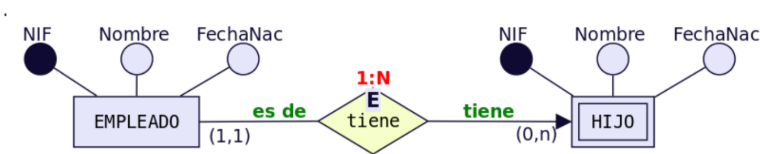
-
Dependencia en Identificación (ID): Además de depender de la existencia de la fuerte, la entidad débil carece de atributos propios suficientes para formar una clave primaria. Necesita combinar sus propios atributos parciales (discriminante) con la clave primaria de la entidad fuerte para identificarse unívocamente.
-
Símbolo: Se representa con una barra atravesando el rombo de relación y las letras ID en su interior (o bien con doble rombo sin texto).
-
Ejemplo: Una PROVINCIA (clave: CodProv) y un MUNICIPIO (clave parcial: CodMun). El municipio "001" no se identifica solo; necesita concatenarse con la provincia para ser único (CodProv + CodMun).
-
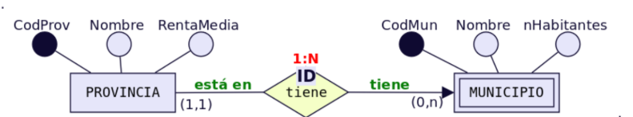
2.2. Atributos y su Clasificación ¶
Los atributos describen las propiedades puntuales que caracterizan a una entidad o a una relación. Se grafican mediante elipses conectadas al elemento correspondiente.
-
Atributo Clave (Identificador Principal): Es el atributo (o conjunto de ellos) que identifica de forma unívoca a cada ocurrencia de una entidad. No admite valores duplicados ni nulos. Se representa con el nombre del atributo subrayado.
-
Superclave: Conjunto de uno o más atributos que, tomados colectivamente, permiten identificar de forma única una ocurrencia.
-
Clave Candidata: Superclave mínima. Es decir, una superclave que no contiene ningún subconjunto que sea también superclave. Una entidad puede tener varias claves candidatas (ej. DNI, Número de la Seguridad Social, Email), de las cuales se elige una como Clave Primaria.
-
Atributo Compuesto: Atributo que se puede descomponer en subcomponentes más simples con significado propio.
-
Ejemplo: El atributo Dirección se descompone en Calle, Número, Piso y Código Postal.
-
-
Atributo Multivalorado: Atributo que puede almacenar múltiples valores simultáneamente para una única ocurrencia de la entidad. Se representa gráficamente con una elipse de doble línea.
-
Ejemplo: El atributo Teléfono de una entidad CLIENTE (puede tener un móvil, un fijo de casa y un teléfono de trabajo).
-
-
Atributo Derivado: Es aquel cuyo valor no se almacena físicamente, sino que se calcula dinámicamente a partir de otros atributos existentes (almacenados) mediante una función o fórmula. Se representa con una elipse de trazo discontinuo.
-
Ejemplo: El atributo Edad calculado dinámicamente a partir de la Fecha de Nacimiento y la fecha actual del sistema.
-
-
Valor Nulo (NULL): Concepto utilizado cuando un atributo no tiene un valor aplicable para una ocurrencia en concreto (ej. un empleado que no tiene segundo apellido) o cuando el valor se desconoce temporalmente.
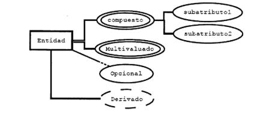
2.3. Relaciones (Interrelaciones) ¶
Una relación es una asociación o correspondencia conceptual entre dos o más entidades. Se representa mediante un rombo de línea simple que se conecta a las entidades mediante líneas.
2.3.1. Grado de la Relación ¶
El grado es el número de entidades distintas que participan en la relación.
-
Grado 1 (Reflexivas o Recursivas): Relación donde una entidad se asocia consigo misma bajo diferentes roles.
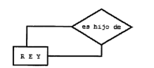
-
Ejemplo: En la entidad EMPLEADO, una relación supervisa asocia a un empleado en calidad de "supervisor" con otros empleados en calidad de "supervisados".
-
Grado 2 (Binarias): Relaciona a dos entidades distintas (es el caso más común).
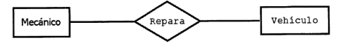
-
Grado 3 (Ternarias): Relaciona a tres entidades de forma simultánea.
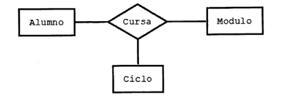
2.3.2. Cardinalidad y participación ¶
La cardinalidad expresa el número máximo de ocurrencias de una entidad que pueden asociarse con una ocurrencia de otra entidad participante. Las conectividades binarias estándar son:
-
Uno a Uno (1:1): Cada ocurrencia de la entidad A se asocia con un máximo de una ocurrencia de B, y viceversa.
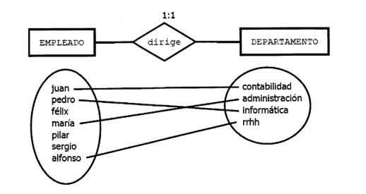
-
Uno a Muchos (1:N): Una ocurrencia de A puede asociarse con múltiples ocurrencias de B, pero una ocurrencia de B solo puede asociarse con un único registro de A.
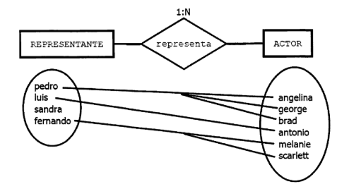
-
Muchos a Muchos (N:M): Cualquier ocurrencia de A puede asociarse con múltiples de B, e inversamente, cualquier ocurrencia de B con múltiples de A.
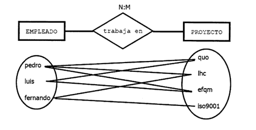
La participación o cardinalidad de ocurrencias se escribe formalmente en el extremo de la línea de conexión como un intervalo (min, max):
-
Cardinalidad Mínima: El número mínimo de veces que una ocurrencia puede participar en la relación (usualmente 0 si es opcional, o 1 si es obligatoria).
-
Cardinalidad Máxima: El número máximo de veces que una ocurrencia puede participar en la relación (1 o n).
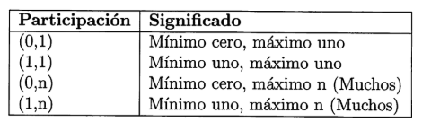
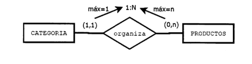
3. RELACIONES TERNARIAS Y DE GRADO SUPERIOR ¶
Las relaciones de grado superior a dos (habitualmente ternarias) requieren un análisis metodológico formal muy estricto para determinar correctamente sus conectividades y cardinalidades.
Para averiguar la cardinalidad de la entidad C en una relación que asocia a las entidades A, B y C, debemos fijar mentalmente una ocurrencia de A y una ocurrencia de B simultáneamente, y preguntarnos: ¿Con cuántas ocurrencias de C se pueden relacionar en este escenario?
A continuación, analizamos detalladamente los cuatro escenarios posibles de relaciones ternarias según sus cardinalidades teóricas:
Escenario 1: Cardinalidad Muchos a Muchos a Muchos (N:M:P) ¶
Se produce cuando fijando dos entidades cualesquiera, estas se asocian con múltiples ocurrencias de la tercera.
-
Dominio de ejemplo: Control académico de alumnos matriculados. Participan las entidades ESTUDIANTE, ASIGNATURA y SEMESTRE a través de la relación CURSA.
-
Análisis formal:
-
Fijamos un Estudiante y una Asignatura concreta: ¿En cuántos semestres puede estar cursando esa asignatura? Varios (N) (ej. si la suspende y repite).
-
Fijamos un Estudiante y un Semestre: ¿Cuántas asignaturas diferentes puede cursar simultáneamente? Varias (M).
-
Fijamos una Asignatura y un Semestre: ¿Cuántos estudiantes diferentes pueden estar matriculados en ella? Varios (P).
-
-
Resultado conceptual: La relación es de conectividad N:M:P.
Escenario 2: Cardinalidad Muchos a Muchos a Uno (M:N:1) ¶
Se produce cuando fijando dos entidades estas se relacionan obligatoriamente con una única ocurrencia de la tercera, mientras que las otras combinaciones admiten multiplicidad.
-
Dominio de ejemplo: Control de la actividad laboral de profesores. Participan MAESTRO, ESCUELA y CURSO en la relación IMPARTE.
-
Análisis formal:
-
Fijamos un Maestro y una Escuela donde trabaja: ¿En cuántos cursos diferentes puede estar dando clase? Varios (N).
-
Fijamos un Curso y una Escuela: ¿Cuántos maestros diferentes pueden dar clase en ella? Varios (M).
-
Fijamos un Maestro específico que imparte un Curso determinado: ¿En cuántas escuelas diferentes puede estar haciendo esa actividad en el mismo momento? Solo en una (1).
-
-
Resultado conceptual: La relación es de conectividad M:N:1 (el "1" se ubica en el extremo de ESCUELA).
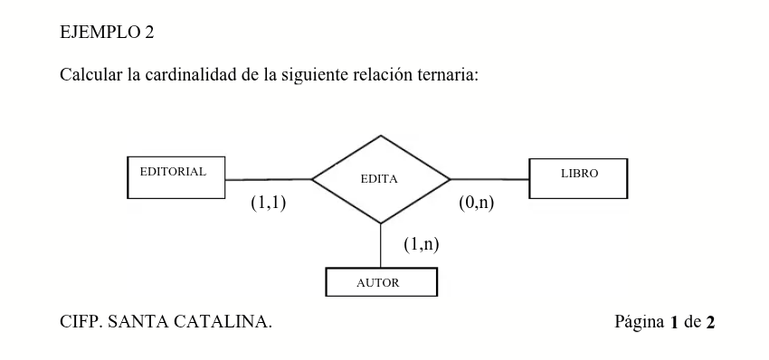
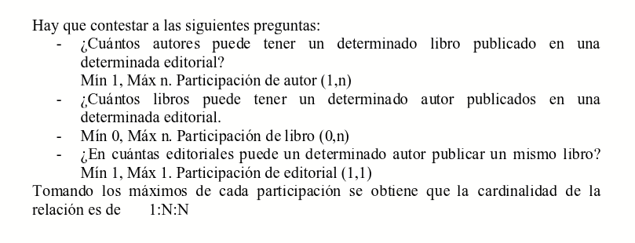
Escenario 3: Cardinalidad Uno a Uno a Muchos (1:1:N) ¶
Se produce cuando dos de las combinaciones cruzadas devuelven una única ocurrencia de salida, y solo una combinación permite multiplicidad.
-
Dominio de ejemplo: Planificación espacial de docencia. Participan AULA, HORA y ASIGNATURA en la relación OCUPA.
-
Análisis formal:
-
Fijamos un Aula concreta y una Hora determinada: ¿Cuántas asignaturas se pueden impartir de forma simultánea? Máximo 1 (1) (para evitar colisiones de espacio).
-
Fijamos una Hora y una Asignatura concreta: ¿En cuántas aulas diferentes se puede estar impartiendo simultáneamente dicha asignatura? Máximo 1 (1) (asumiendo que es un único grupo).
-
Fijamos un Aula y una Asignatura determinada: ¿En cuántas horas diferentes a lo largo de la semana se puede impartir esa asignatura en esa clase? Varias (N).
-
-
Resultado conceptual: La relación es de conectividad 1:1:N.
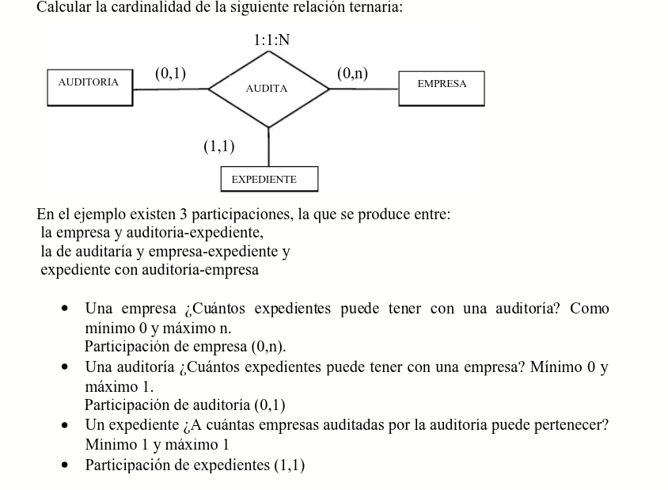
Escenario 4: Cardinalidad Uno a Uno a Uno (1:1:1) ¶
Es un caso extremadamente restrictivo donde cualquier combinación biunívoca de dos entidades determina de forma única y obligatoria una sola ocurrencia de la tercera.
-
Dominio de ejemplo: Defensa de proyectos de fin de ciclo. Participan TRIBUNAL, ESTUDIANTE y PROYECTO en la relación DEFENSA.
-
Análisis formal:
-
Fijamos un Tribunal y un Estudiante: ¿Cuántos proyectos pueden estar evaluando conjuntamente en esa sesión? Solo 1 (1).
-
Fijamos un Estudiante y un Proyecto concreto: ¿Cuántos tribunales distintos pueden evaluar ese proyecto de ese estudiante? Solo 1 (1) (siempre el mismo tribunal asignado).
-
Fijamos un Tribunal y un Proyecto: ¿De cuántos alumnos se evaluará la defensa de ese proyecto en concreto? Solo de 1 (1) (suponiendo proyectos individuales).
-
-
Resultado conceptual: La relación es de conectividad 1:1:1.
4. MODELO ENTIDAD-RELACIÓN EXTENDIDO (E/RE) ¶
El modelo de datos clásico de Chen se vio desbordado al intentar modelar realidades organizativas complejas. Por ello, se añadieron conceptos del diseño orientado a objetos dando lugar al Modelo Entidad-Relación Extendido (E/RE).
4.1. Generalización y Especialización ¶
Por ejemplo, imaginemos la siguiente situación.
Queremos hacer una BD sobre los animales de un Zoo. Tenemos las entidades ANIMAL, FELINO, AVE, REPTIL, INSECTO. FELINO, AVE, REPTIL e INSECTO tendrían el mismo tipo de relación con ANIMAL: «son un tipo de». Ahora bien, su representación mediante el E/R clásico sería bastante engorrosa:
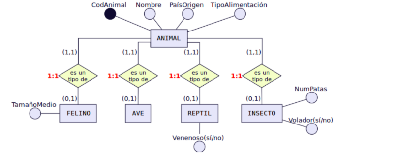
Consiste en agrupar o subdividir entidades para modelar relaciones de jerarquía y herencia de atributos.
-
Superentidad (Clase Padre): Es la entidad genérica que almacena los atributos comunes a todas las subdivisiones (ej. EMPLEADO con atributos DNI, Nombre, Salario).
-
Subentidades (Clases Hijas): Son las entidades especializadas que heredan automáticamente todos los atributos de la superentidad y, además, añaden atributos particulares y exclusivos propios (ej. INGENIERO añade Especialidad; SECRETARIO añade PulsacionesPorMinuto).
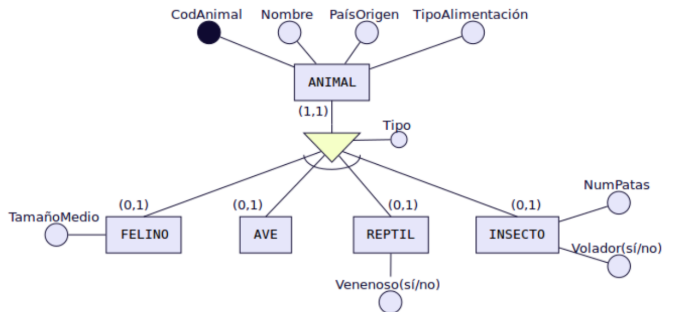
4.2. Restricciones de Cobertura en Jerarquías ¶
Al definir una especialización de una superentidad en varias subentidades, se deben especificar obligatoriamente dos tipos de restricciones ortogonales (cobertura total/parcial y exclusión/solapamiento):
Total: Subdividimos la entidad Empleado en: Ingeniero, Secretario y Técnico y en nuestra BD no hay ningún otro empleado que no pertenezca a uno de estos tres tipos.
Parcial: Subdividimos la entidad Empleado en: Ingeniero, Secretario y Técnico pero en nuestra BD puede haber empleados que no pertenezcan a ninguno de estos tres tipos.
Solapada: Subdividimos la entidad Empleado, en: Ingeniero, Secretario y Técnico y en nuestra BD puede haber empleados que sean a la vez Ingenieros y secretarios, o secretarios y técnicos, etc.
Exclusiva: Subdividimos la entidad Empleado en: Ingeniero, Secretario y Técnico. En nuestra BD ningún empleado pertenece a más de una subentidad.
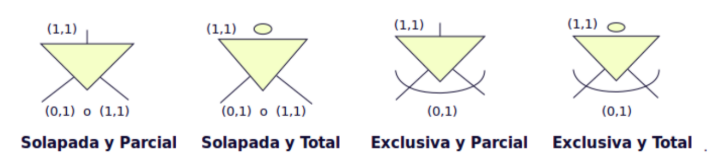
Las cuatro combinaciones posibles se detallan a continuación utilizando la entidad EMPLEADO:
1. Jerarquía Solapada y Parcial
-
Semántica: Un empleado puede pertenecer simultáneamente a varias subentidades a la vez (solapada). Además, existe la posibilidad de que un empleado de la empresa no pertenezca a ninguna de ellas y se quede registrado únicamente en la superentidad (parcial).
-
Símbolo: Se representa con la palabra Solapada (o S) e Incompleta/Parcial en el nodo de especialización.
-
Ejemplo: Un empleado en una base de datos científica puede desempeñar simultáneamente los cargos de TÉCNICO, CIENTÍFICO y ASTRONAUTA (o técnico y astronauta a la vez). Asimismo, puede haber administrativos contratados que se registren en EMPLEADO pero que no entren en ninguna de esas categorías de especialización (parcial).
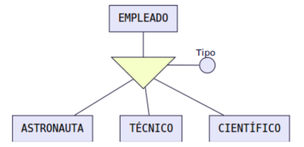
2. Jerarquía Solapada y Total
-
Semántica: Un empleado puede pertenecer de manera simultánea a varias categorías hijas (solapada), pero obligatoriamente debe pertenecer al menos a una de ellas. No se admiten registros que vivan exclusivamente en la superentidad.
-
Símbolo: Representado con Solapada / Total.
-
Ejemplo: Un empleado espacial que debe estar asignado por lo menos a un rol técnico, científico o de astronauta de forma obligatoria, pudiendo compaginar varios roles a la vez.
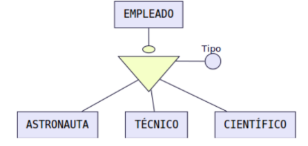
3. Jerarquía Exclusiva y Parcial
-
Semántica: Un empleado solo puede pertenecer como máximo a una única subentidad (exclusiva/disjunta). No obstante, es parcial porque no todos los empleados tienen por qué estar clasificados en las subentidades hijas propuestas.
-
Símbolo: Representado con Exclusiva (o E / D de disjunta) e Incompleta/Parcial.
-
Ejemplo: Un empleado de un centro médico puede estar especializado en MÉDICO o ENFERMERO, pero nunca en ambos a la vez. Sin embargo, hay personal de limpieza que no pertenece a ninguna de esas subentidades (parcial).
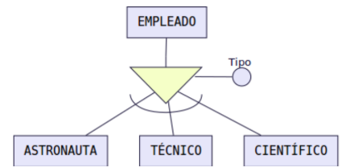
4. Jerarquía Exclusiva y Total
-
Semántica: Un empleado pertenece de manera única y excluyente a una sola de las subentidades propuestas. Además, es obligatorio que pertenezca a alguna; no se permite la existencia de ocurrencias genéricas en la superentidad sin estar clasificadas.
-
Símbolo: Representado con Exclusiva / Total.
-
Ejemplo: Subdividimos la entidad EMPLEADO en las subentidades INGENIERO, SECRETARIO y TÉCNICO. En las reglas de la empresa, un empleado realiza únicamente una de estas funciones de forma excluyente y no se contrata a nadie que no encaje en alguna de ellas.
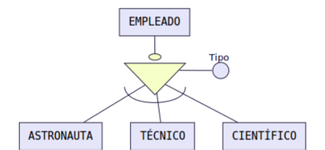
5. Exclusividad o inclusividad entre relaciones ¶
Otros símbolos usados en el modelo E/R son los siguientes:
Restricción de exclusividad entre dos tipos de relaciones R1 y R2 respecto a la entidad E1. Significa que E1 está relacionada, o bien con E2 o bien con E3, pero no pueden darse ambas relaciones simultáneamente.
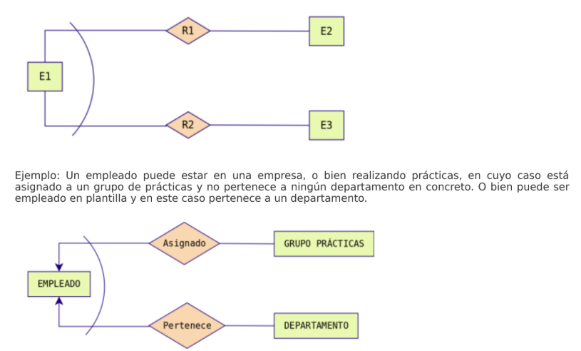
Restricción de inclusividad entre dos tipos de relaciones R1 y R2 respecto a la entidad E1. Para que la entidad E1 participe en la relación R2 debe participar previamente en la relación R1.
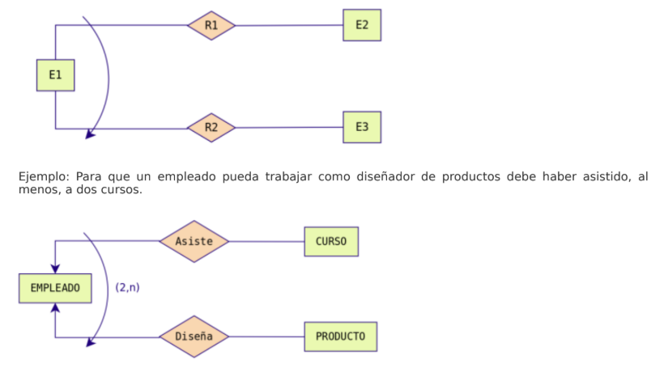
Restricción de exclusión entre dos tipos de relaciones R1 y R2. Significa que E1 está relacionada con E2 bien mediante R1, o bien mediante R2 pero que no pueden darse ambas relaciones simultáneamente.
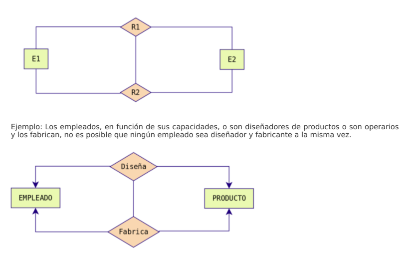
Restricción de inclusión entre dos tipos de relaciones R1 y R2. Para que la entidad E1 participe en la relación R2 con E2 debe participar previamente en la relación R1.
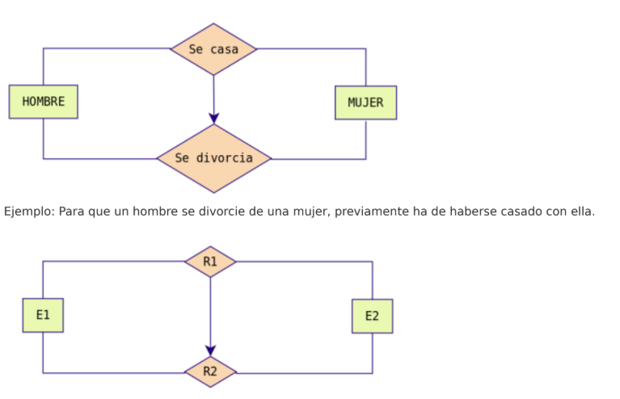
6. NOTACIONES DEL DIAGRAMA E/R ¶
Aunque la Notación de Chen es excelente para comprender los fundamentos teóricos del diseño de datos de forma muy gráfica, existen otras notaciones industriales de amplio uso tanto en software de diseño (DIA, draw.io, Visio) como en herramientas integradas de ingeniería de software (CASE).
6.1. Estilo Notación de Chen ¶
-
Entidades: Rectángulos de línea simple.
-
Relaciones: Rombos de línea simple.
-
Cardinalidades: Intervalos numéricos expresados explícitamente a los lados del rombo: (0,1), (1,1), (0,n), (1,n).
-
Atributos: Elipses individuales conectadas mediante líneas directas a la entidad o relación.
6.2. Estilo Patas de Gallo (Crow's Foot / Notación de Martin) ¶
Es el estándar por excelencia en el ámbito del diseño físico y lógico moderno. Elimina los rombos de relación para simplificar el lienzo del diagrama, integrando las cardinalidades directamente en los extremos de las líneas de conexión.
Símbolos de Cardinalidad en Patas de Gallo: ¶
-
Cero o Muchos (0:N): Un círculo (opcionalidad) seguido de una bifurcación de tres líneas (pata de gallo).
-
Uno o Muchos (1:N): Una barra perpendicular (obligatoriedad) seguida de una bifurcación de tres líneas.
-
Uno y Solo Uno (1:1): Dos barras perpendiculares consecutivas cruzando la línea de conexión.
-
Cero o Uno (0:1): Un círculo seguido de una barra perpendicular.
Notación E/R más utilizadas (Notación de Chen y Notación patas de gallo)
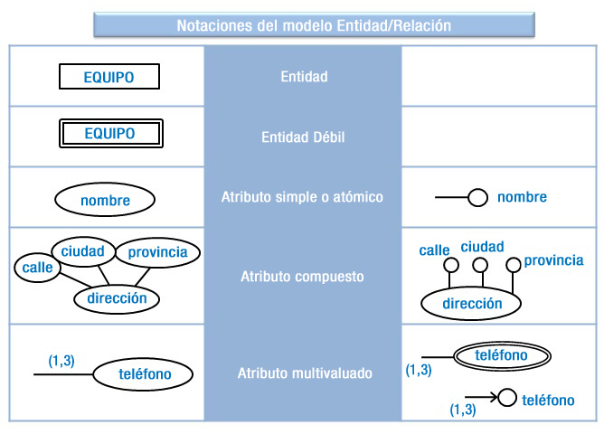
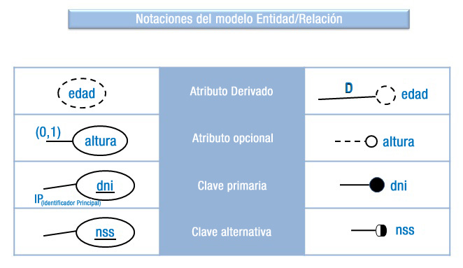
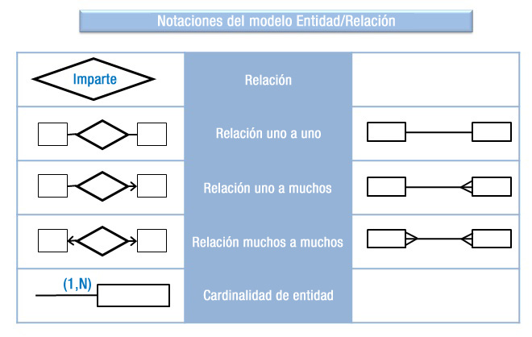
6.3. Estilo Notación de Bachman ¶
Caracterizada porque las relaciones se representan como flechas dirigidas donde la punta de la flecha indica el sentido del "Muchos" (N) y el origen de la línea representa el "Uno" (1). Los atributos se listan directamente dentro del rectángulo de la entidad en lugar de usar globos independientes.
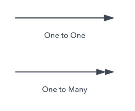
6.4. Estilo Notación de Barker ¶
Es la notación nativa adoptada por las herramientas de diseño de Oracle. Las entidades se dibujan como rectángulos de esquinas redondeadas. Utiliza líneas continuas para denotar relaciones obligatorias y líneas discontinuas para representar relaciones opcionales, indicando el lado de "Muchos" con una pequeña pata de gallo clásica. Los atributos clave se marcan internamente con un símbolo de almohadilla (#) o asterisco (*).
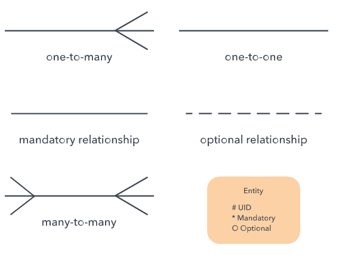
6.5. Tabla Resumen de Equivalencias Gráficas ¶
| Concepto Teórico | Representación en Chen | Representación en Patas de Gallo |
|---|---|---|
| Entidad Fuerte | Rectángulo simple | Rectángulo con cabecera de nombre |
| Entidad Débil | Rectángulo doble | Rectángulo con esquinas redondeadas o línea discontinua |
| Relación | Rombo conectado por líneas | Línea directa entre tablas con símbolos extremos |
| Atributo | Elipse externa con línea | Lista interna dentro de la caja de la entidad |
| Cardinalidad (0,N) | Línea con etiqueta (0,n) | Círculo y pata de gallo (-o<) |
| Cardinalidad (1,1) | Línea con etiqueta (1,1) | Doble barra perpendicular (`- |
7 Construcción de un diagrama E/R ¶
A continuación se presenta una guía metodológica para crear un entidad relación a partir de un análisis de requisitos:
1. Leer varias veces el problema hasta memorizarlo.
2. Obtener una lista inicial de candidatos a entidades, relaciones y atributos. Se realiza siguiendo los siguientes consejos:
-
Identificar las entidades. Suelen ser aquellos nombres comunes que son importantes para el desarrollo del problema. Por ejemplo, empleado, vehículo, agencia, etc. En principio, todos los conceptos deberían estar perfectamente especificados en el documento de requisitos, pero, de no existir el documento ERS, quizá solo se disponga de extractos de conversaciones con usuarios en las que se hacen referencias vagas a ciertos objetos, teniendo que hacer un importante ejercicio de abstracción para poder distinguir si son entidades, atributos, etc. Por ejemplo, un mecánico que tan solo habla de ciertos modelos de vehículos pertenecientes a determinadas personas, pero que nunca hace referencia a los vehículos Diesel que serán fundamentales identificar para el correcto diseño de la base de datos.
-
No hay que obsesionarse en los primeros pasos por distinguir las entidades fuertes de las débiles. Si es trivial, se toma nota de aquellas que parezcan claramente entidades débiles. De lo contrario, se apuntan como entidades sin especificar si son fuertes o débiles.
-
Extraer los atributos de cada entidad, identificando aquellos que pueden ser clave. Se suelen distinguir por ser adjetivos asociados a un nombre común seleccionadas como entidades. Por ejemplo, color, que es un adjetivo, puede ir asociado a la entidad vehículo. Además, se debe establecer el tipo de atributo, seleccionando si es opcional, obligatorio, multivaluado, compuesto o derivado. Si es compuesto se indica su composición, y si es derivado, cómo se calcula. Es bastante útil apuntar sinónimos utilizados para el atributo para eliminar redundancias.
-
Es fácil identificar las generalizaciones si se obtiene un atributo que es aplicable a más de una entidad. En ese caso, se puede intentar aplicar una generalización/especialización, indicando cuál es la superclase y cuál las subclases. Además, se deben especificar los tipos de especialización (inclusiva, exclusiva, parcial, total).
-
Identificar los atributos de cada relación. Se suelen distinguir, al igual que los de entidad, por ser adjetivos, teniendo en cuenta que para que sean de relación, solo deben ser aplicables a la relación y no a ninguna de las de las entidades relacionadas.
-
También es posible que los nombres comunes contengan muy poca información y no sea posible incluirlas como entidades. En este caso, se pueden seleccionar como atributos de otra entidad, por ejemplo, el autor de un libro puede ser una entidad, pero si solo se dispone del nombre del autor, no tiene sentido incluirlo como una entidad con un único atributo. En este caso, se puede incluir como atributo de la entidad Libro.
-
Extraer los dominios de los atributos. Siempre es buena práctica, ir apuntando, aunque en el diagrama entidad relación no se exprese explícitamente, a qué dominio pertenece cada atributo. Por ejemplo, el Salario pertenece a los números reales (Salario: Reales), o el color de un objeto puede ser verde, amarillo o rojo (Color; Verde, Amarillo, Rojo).
-
Identificar las relaciones. Se pueden ver extrayendo los verbos del texto del problema. Las entidades relacionadas serán el sujeto y el predicado unidos por el verbo que hace de relación. Por ejemplo, un agente inmobiliario vende edificios. En este caso el agente inmobiliario representaría una entidad el edificio la otra entidad y 'vende' sería la relación.
-
Una vez identificada las relaciones, hay que afinar cómo afecta la relación a las entidades implicadas. Este es el momento de distinguir las fuertes de las débiles haciendo preguntas del tipo ¿tiene sentido esta ocurrencia de entidad si quito una ocurrencia de la otra entidad? ¿Se pueden identificar por sí solas las ocurrencias de cada entidad? Si a la primera pregunta la respuesta es negativa, las dos entidades son fuertes, si no, alguna de ellas es débil. Si la respuesta a la segunda es positiva, dependen solo en existencia, si es negativa, alguna de las dos depende en identificación de la otra.
3. Averiguar las participaciones y cardinalidades. Generalmente se extraen del propio enunciado del problema. Si no vienen especificadas, se elegirá la que almacene mayor cantidad de información en la base de datos.
4. Poner todos los elementos listados en el paso 2 en un mapa y volver a considerar la pertenencia de cada uno de los elementos listados a su categoría. Así, se replanteará de nuevo si cierto atributo es una entidad, o si cierta entidad puede ser una relación, etc.
5. Refinar el diagrama hasta que se eliminen todas las incoherencias posibles, volviendo a los pasos anteriores en caso de encontrar algún atasco mental o conceptos dudosos que dificulten la continuación del análisis. Es bueno, en estas circunstancias discutir con compañeros u otros expertos sobre el diseño realizado.
6. Si hay dudas sobre el enunciado o sobre los requisitos, o se han quedado algunas cosas en el tintero, será necesario acudir al responsable del documento ERS o volver a concertar una entrevista con el usuario para aclarar conceptos. En este caso, se aclararán las dudas y se volverá al punto 2 para reiniciar el análisis.
En algunos casos podemos encontrarnos con información que no se representará en el diagrama E/R, Será información que tendremos en cuenta en otros pasos de la construcción de la Base de Datos .